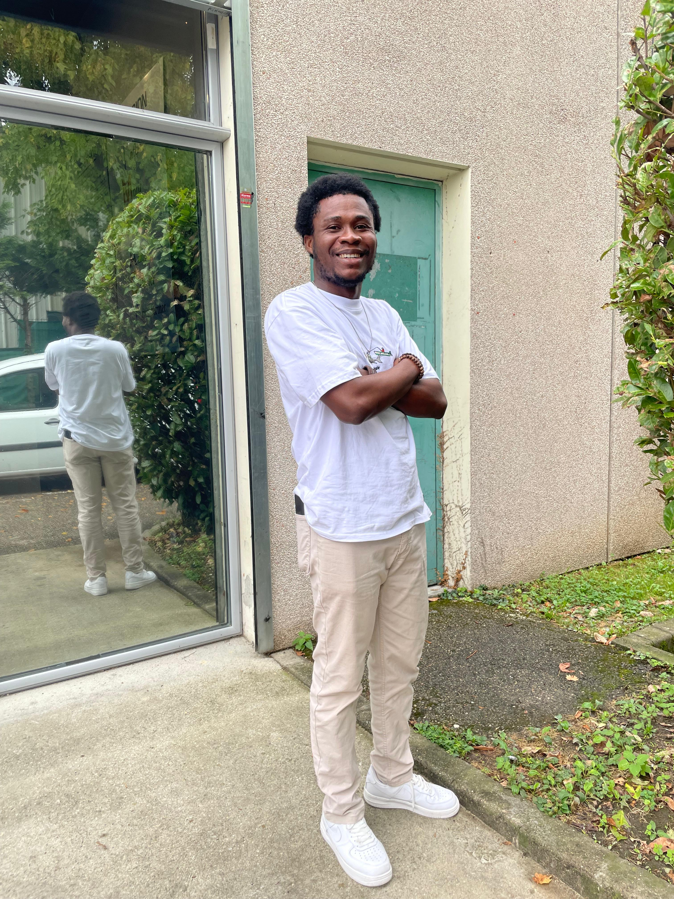

Parlons d'IA pour l'enseignement-apprentissage des langues
IA-Innovation pédagogique numérique-Langues
Bienvenue sur ma page ! Fort d'une expérience en enseignement, en communication et en conception pédagogique, je me consacre à l'innovation numérique au service de l'éducation et la formation. Passionné le développement de solutions éducatives numériques, je vous invite à découvrir mon parcours et mes projets.
Qui est Serge-Patrice Kokora ?
 Étudiant passionné par les langues, le numérique et l'innovation pédagogique, je suis actuellement en Master 1 en Didactique des Langues et Ingénierie Pédagogique Numérique à l'Université Grenoble Alpes. Mon parcours académique et mes diverses expériences professionnelles témoignent de ma polyvalence et de mon engagement pour l'apprentissage dans des environnements multiculturels.
Avec un background en sciences du langage et une expertise en gestion, leadership et gouvernance acquise lors de mes études en Suisse, j'ai développé une solide compétence dans l'analyse, l'adaptation et la conception pédagogique numérique. J'ai exercé en tant que tuteur de FLE au sein de l'Agence Interculturelle Luxembourgeoise et comme responsable de communication et animateur socioculturel à l’ONG Éduquer pour Développer (EPD) à Abidjan, où j'ai animé des ateliers éducatifs et environnementaux.
Mon objectif est de contribuer activement à l'éducation numérique et de concevoir des solutions pédagogiques innovantes adaptées aux besoins de divers publics, en mettant à profit mes compétences en e-learning et en ingénierie pédagogique numérique.
Mes loisirs et l'IA
IA & Football : Quand l'IA fait son entrée dans mon sport Roi
Le football, ce sport qui fait vibrer les foules à travers le monde, entre dans une nouvelle ère avec l'arrivée de l'Intelligence Artificielle. De la prédiction des performances des joueurs à l'analyse stratégique des matchs, l'IA est devenue une alliée puissante pour les équipes, les entraîneurs, et même les fans.
Dans le domaine de l'entraînement, par exemple, des algorithmes d'IA sont capables d'analyser les statistiques de chaque joueur, de déceler leurs points faibles et de suggérer des exercices personnalisés. Cela permet aux coachs d'optimiser les performances et de prévenir les blessures en ajustant la charge de travail selon les capacités physiques de chaque athlète.
Et pour les fans, l'IA change également la donne ! Les applications mobiles intégrant l'IA offrent désormais des analyses en temps réel pendant les matchs et des statistiques pointues, permettant aux passionnés de suivre de plus près leurs équipes et leurs joueurs favoris. Une véritable révolution est en marche dans le monde du football, portée par la technologie de l'IA.
Au carrefour des bienfaits de la lecture, je découvre l'IA
La lecture, source inépuisable de connaissances et d’évasion, se trouve aujourd’hui enrichie par les technologies de l'Intelligence Artificielle. Imaginez une IA qui, comme un compagnon littéraire, adapte les recommandations de lecture en fonction de nos préférences, affine ses suggestions à mesure que nous avançons dans notre parcours littéraire, ou même crée de nouvelles histoires interactives.
Les applications de lecture assistée par l'IA vont encore plus loin : elles facilitent la lecture pour les personnes souffrant de dyslexie, analysent les styles d'écriture, et offrent une immersion profonde dans les livres grâce à des contenus multimédia complémentaires. Ainsi, au fil de nos découvertes littéraires, l'IA s'érige en guide subtil qui enrichit notre expérience, élargit nos horizons et nous invite à explorer le monde avec un œil nouveau.
En somme, l’IA et la lecture forment aujourd'hui un tandem d'apprentissage et de divertissement inédit, où la technologie vient renforcer notre goût des mots et de l'imagination.

L'IA et l'innovation numérique : ma nouvelle attraction
L'Intelligence Artificielle et l'innovation numérique se croisent dans un univers fascinant et sans limites. Chaque jour, une nouvelle application, une nouvelle avancée émerge, et cette effervescence constante a de quoi captiver l’esprit !
Des chatbots interactifs aux algorithmes d'apprentissage automatique, l’IA transforme notre quotidien, simplifie nos tâches et ouvre des perspectives inouïes dans tous les domaines : santé, éducation, finance, et bien plus encore. Cette révolution n'est plus un simple concept futuriste ; elle est là, à portée de main, et continue de se déployer à une vitesse vertigineuse.
Se plonger dans l'univers de l'IA et de l'innovation numérique, c'est embarquer pour un voyage où chaque clic peut devenir une source d'inspiration. Pour tous ceux qui rêvent de modernité et de nouvelles expériences, l'IA est aujourd'hui une aventure technologique impossible à ignorer.